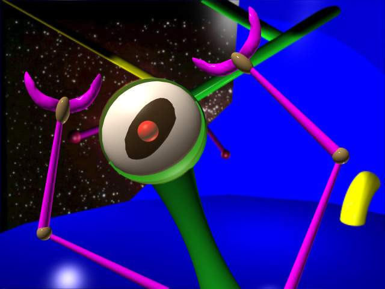

|  | Once upon a time there were Fred Ford and Paul Reiche III, who created two epic games of the Star Control saga: the first one, and the second one, which became the greatest game in the quadrant. They were working for a little company called Accolade. Then their games succeeded and Accolade became a big company. That is, a BIG company. (please excuse us for any "minor" historical errors in this document) They lived happily ever after, until Accolade were tricked by the Umgah to dump Fred Ford and Paul Reiche III, and make their own third sequel to the series which had absolutely nothing to do with the previous ones, and shamed the honorable title of Star Control, which had resonated deeply into the hearts of each and every one of us. The Umgah told Accolade this would make it a better game. It is uncertain how they managed to make them buy that crap, but it is believed the Dnyarri had something to do with it. Anyway... We, the loyal followers and believers in the path set by the ancient ones, have vowed to restore the true name of Star Control, and cleanse the shame caused by Accolade's sequel. However, we do not seek to harm our beloved brothers in Accolade or to dishonor them by doing this. Therefore, we shall make this sequel available to all who wish to download it and have the bandwidth. We hope we will achieve these goals, and create a sequel that will match, and IF possible, accede the level of sarcastic humor, witty dialog, and overall challenge of Star Control II. |
Only beta release exist now. First, it means that if you play the game you're an beta tester. Be proud. Second, it means that the game is likely to crash with great frequency. Upon finding a problem, we'd like you to report it, but before you do, please do the following:
Gob is like a cross between Asteroids, Life-Force, and Star Control. It's the game of survival with custom ship upgrades and simple quests.
Run twwin.exe or timewarp. Click on the "Extended Menu" button. Click on the "Play Game" button. Click on the "Gob" button.
If you survive for long enough and accumulate enough wealth, you will eventually be able to purchase the "Hyper Dynamo" upgrade. Once you get that, you can basically consider yourself to have won the game. Try to win Gob with as many different ships as you can.
The keyboard controls for config 0 in TimeWarp
There are 4 starbases of 4 types (though there are only 3 different starbase graphics... They are located at random locations, except for one which starts out next to you, at 12000x12000. Each type of starbase sells a specific type of ship, either Supox, Orz, Kohr-Ah, or Utwig. Some starbases may also sell unique upgrades only available there.
There are a number of generic upgrades that are available for most types of ships.
Each purchasable ship type has a number of ship specific upgrades available for it, including at least one special ship specific upgrade. Most special ship specific upgrades can only be purchased once.
There are also a number of very special upgrades. These can usually be purchased for any ship type, but only at certain starbases. Most of these are very expensive. Some can only be purchased when certain conditions are met.
Most upgrades are lost when your ship is sold (although they add to the sale value of your ship).
These upgrades are available for all ships:
| Crewpod | Increases your max. crew by 2. You cannot exceed 42. |
| Battery | Increases your max. battery by 2. You cannot exceed 42. |
| Thruster Upgrade | Increases your max. speed by a lot, and your acceleration by a little. |
| Control Jet Upgrade | Increases your turn rate by a lot, and your acceleration by a little. |
| Dynamo | Increases your battery recovery rate. |
These upgrades are available for Supoxi only:
| Glob Hurler Upgrade | Increase your max range by a medium amount, and your projectile velocity by a little. |
| Glob Former Upgrade | Increase the damage your gun inflicts by 1, and the battery you require to shoot by a lot. Don't buy this a second time unless you have tons of dynamos (5-8), and don't buy it a third time unless you have gazzillions of dynamos (12-21). |
| BLADE Upgrade | ??? |
These upgrades are available for Orz only:
| Missile Upgrade | Improves your missiles, both range and damage. It also makes them cost more battery to shoot. |
| Marine Armor Upgrade | Improves the max. speed and acceleration of your space marines. |
| Absoption | ??? |
These upgrades are available for Kohr-Ah only:
| Shuriken Sharpness | Increases damage inflicted by blades. |
| Shuriken Speed | Increases the velocity of blades. |
| FRIED Range | Increases the range & velocity of F.R.I.E.D. This upgrade can only be purchased once. |
| FRIED Damage | Increases the damage dealt by F.R.I.E.D. This upgrade can only be purchased once. |
These upgrades are available for Utwig only:
| Bolt Regulator | Increase maximum range |
| Bolt Charger | Increase damage inflicted. Also slows your rate of fire. |
| Bolt Generator | Speeds up your rate of fire |
| Mask of Honest Demeanor | ??? |
| Mask of Elephantine Fortitude | ??? |
(note that you are only allowed to purchase one mask)
These very special upgrades may be available. Some will be hidden, some will not be available, some may not be available until certain conditions are met. Most are extremely valuable.
| Planet Locator | Keeps you from getting lost. |
| Divine Favor | ??? |
| External Defense System | ??? |
| Devil Protects His Own | ??? |
| Hyper Dynamo | ??? |
| Rainbow Abyss | ??? |
| Special | ||
| Asteroid | 1 buckazoid | |
| Weak | ||
| Thraddash Torch | 1 starbuck | |
| Zof-Fot-Pik Stinger | 1 starbuck | |
| Shofixti Scout | 1 starbuck | |
| Drax Griphon | 1 starbuck | |
| Moderate | ||
| Kterbi Saber | 2 starbucks | |
| Kahr Boomerang | 2 starbucks | |
| Ilwrath Spider | 2 starbucks | |
| Syreen Penetrator | 2 starbucks | |
| Urquan Dreadnought | 3 starbucks | |
| Lk Sanctorum | 3 starbucks | |
| Tough | ||
| Mmmrnhrmmm Transformer | 3 starbucks, 1 buckazoid | |
| Druuge Mauler | 3 starbucks, 1 buckazoid | |
| Yehat Terminator | 4 starbucks, 1 buckazoid | |
| Earthling Cruiser | 4 starbucks, 1 buckazoid | |
| Herald Exterminator | 4 starbucks, 2 buckazoid | |
| Virtao Limb | 4 starbucks, 2 buckazoid | |
| Nasty | ||
| Ploxis Plunderer | 5 starbucks, 3 buckazoid | |
| Narool Lurker | 5 starbucks, 3 buckazoid |
The type and frequency of enemy spawning is based upon the time you have been alive and the number of enemies currently alive. The cost of the upgrades is based upon what upgrades you already have, and upon what type of ship you have.
this page is hosted by
{kind=link}